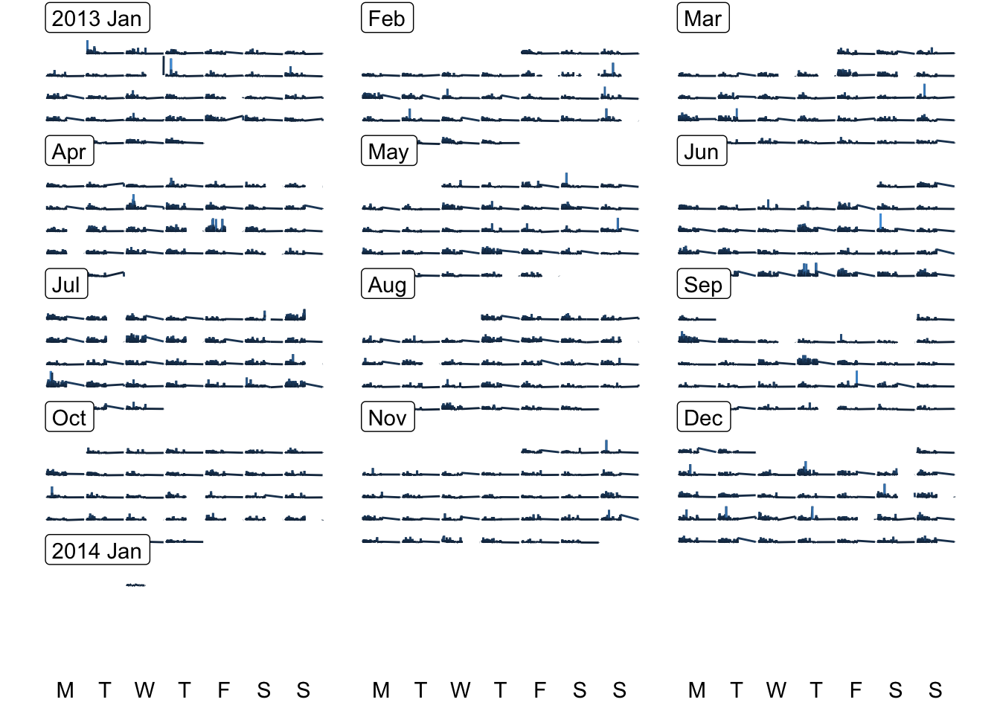

Lesson 9: Manipulating time series and dates
Functions for Lesson 9
ymd(), ymd_h(), ymd_hm(), ymd_hms(), hm(), date(), week(), as_date(), yq(), rollback(), date_decimal()
Packages for Lesson 9
lubridate
Agenda

Dates and times are stored as class POSIX, which can be represented as POSIXct, POSIXlt, or POSIXt, since 1970-01-01 as a starting point.
POSIXct = number of seconds since the beginning of 1970 as a numeric vector. Best for data frames.
POSIXlt = a list of vectors that also includes weekday (Sun to Sat) and year day (0 to 365). Best for human-readable times and dates.
POSIXt = takes attributes from both classes and good for mixing the two classes and doing arithmetic, e.g. substracting time. You will often see this class listed alongside either of the other classes when you run class().
Further notes
POSIXltobjects are interpreted as the current timezone unless otherwise specified. You can specify the timezone using thetzone = ""argument for some functions inlubridate.
You can switch between classes using
as.POSIXct()andas.POSIXlt()Dateis another class associated with time and dates easily passed to functions that takePOSIXarguments
Quick intro to time formats
ct <- now() # get date and time from your current location
ct
[1] "2020-12-04 14:08:53 AEDT"
ct %>% format("%y-%m") # year, month
[1] "20-12"
ct %>% format("%Y-%m") # full year, month
[1] "2020-12"
ct %>% format("%Y-%m-%d") # year, month, day
[1] "2020-12-04"
ct %>% format("%Y-%m-%d-%H-%M-%S") # year, month, day, hour, min, sec
[1] "2020-12-04-14-08-53"
ct %>% format("%Y ;) %m_:P_%d") # year, month, day with custom separators
[1] "2020 ;) 12_:P_04"
ct %>% format("%D") # date
[1] "12/04/20"
# alternative versions of getting current date and time, respectively (base R)
Sys.Date()
[1] "2020-12-04"
Sys.time()
[1] "2020-12-04 14:08:53 AEDT"Time functions
You can easily distinguish time as dates (date), days (day), years (y), months (m), or hours (h), minutes (m), and seconds (s).
Passing numeric vectors returns the time as POSIX class depending on the function you specify.
Numeric vectors to POSIX/Date
as_date = return date
as_datetime = returns date and time
ymd() = returns combinations of year, month, day, depending on order
require(lubridate)
as_date(12) # 12 days after 1970-01-01
[1] "1970-01-13"
as_datetime(12) # 12 seconds after 1970-01-01
[1] "1970-01-01 00:00:12 UTC"
# adding time numerically
as_datetime(60)
[1] "1970-01-01 00:01:00 UTC"
as_datetime(60 * 60)
[1] "1970-01-01 01:00:00 UTC"
as_datetime(60 * 60 * 24)
[1] "1970-01-02 UTC"
as_datetime(60 * 60 * 24) %>% class
[1] "POSIXct" "POSIXt"
# return dates using arithmetic
as_date(12) - 365
[1] "1969-01-13"Year, month, day, hour, minute, second
# year, month, day, hour, minute, second
ymd(120102)
[1] "2012-01-02"
ydm(120102)
[1] "2012-02-01"
ymd_h(12010203)
[1] "2012-01-02 03:00:00 UTC"
ymd_hm(1201020304)
[1] "2012-01-02 03:04:00 UTC"
ymd_hms(120102030405)
[1] "2012-01-02 03:04:05 UTC"Changing order of date-time returned
mdy_hms(120102030405) # month day year format
[1] "2002-12-01 03:04:05 UTC"
mdy_h(12010203) # with hour
[1] "2002-12-01 03:00:00 UTC"
dmy_hms(120102030405) # day, month, year
[1] "2002-01-12 03:04:05 UTC"
yq("2012 2") # quarter of year
[1] "2012-04-01"
yq("2012 q3") # quarter of year
[1] "2012-07-01"Can also pass string arguments
ymd_hms("120102030405")
[1] "2012-01-02 03:04:05 UTC"
ymd_hms("12-01-02-03-04-05")
[1] "2012-01-02 03:04:05 UTC"
ymd_hms("2012-01-02 03:04:05")
[1] "2012-01-02 03:04:05 UTC"
# and AM/PM
ymd_hms("2012-01-02 03:04:05 AM")
[1] "2012-01-02 03:04:05 UTC"
ymd_hms("2012-01-02 03:04:05 PM")
[1] "2012-01-02 15:04:05 UTC"Dealing with errors and NAs
# throws error b/c vector is short/long
ymd(12)
[1] NA
ymd(1201020304)
[1] NA
# create a stopper to limit return length
ymd(12, truncated = 2)
[1] "2012-01-01"
x <- c("2011-12-31 12:59", "2010-01-01 12", "2010-01")
ymd_hm(x, truncated = 2)
[1] "2011-12-31 12:59:00 UTC" "2010-01-01 12:00:00 UTC" "2020-10-01 00:00:00 UTC"Reading various formats
You can pass a suite of different strings as arguments
tt <- c(20100101120101, "2009-01-02 12-01-02", "2009.01.03 12:01:03", "2009-1-4 12-1-4", "2009-1, 5 12:1, 5",
"200901-08 1201-08", "2009 arbitrary 1 non-decimal 6 chars 12 in between 1 !!! 6", "OR collapsed formats: 20090107 120107 (as long as prefixed with zeros)",
"Automatic wday, Thu, detection, 10-01-10 10:01:10 and p format: AM", "Created on 10-01-11 at 10:01:11 PM")
ymd_hms(tt) [1] "2010-01-01 12:01:01 UTC" "2009-01-02 12:01:02 UTC" "2009-01-03 12:01:03 UTC"
[4] "2009-01-04 12:01:04 UTC" "2009-01-05 12:01:05 UTC" "2009-01-08 12:01:08 UTC"
[7] "2009-01-06 12:01:06 UTC" "2009-01-07 12:01:07 UTC" "2010-01-10 10:01:10 UTC"
[10] "2010-01-11 22:01:11 UTC"POSIX/Date as numeric
Pulling specific time components
# pull specific time components
now() %>% day
[1] 4
now() %>% hour
[1] 14
now() %>% second
[1] 54.86132
# change the day of an assigned time vector
dd <- now()
day(dd) <- 31
dd
[1] "2020-12-31 14:08:54 AEDT"
# setting a day greater than the last day of the chosen month will automatically roll over to the
# following month
dd <- now()
day(dd) <- 32
dd
[1] "2021-01-01 14:08:54 AEDT"Dataset
Load nycflights13 dataset and check out the time_hour column
require(nycflights13)
flights %>% str # stored dataset from nycflights13 package tibble [336,776 × 19] (S3: tbl_df/tbl/data.frame)
$ year : int [1:336776] 2013 2013 2013 2013 2013 2013 2013 2013 2013 2013 ...
$ month : int [1:336776] 1 1 1 1 1 1 1 1 1 1 ...
$ day : int [1:336776] 1 1 1 1 1 1 1 1 1 1 ...
$ dep_time : int [1:336776] 517 533 542 544 554 554 555 557 557 558 ...
$ sched_dep_time: int [1:336776] 515 529 540 545 600 558 600 600 600 600 ...
$ dep_delay : num [1:336776] 2 4 2 -1 -6 -4 -5 -3 -3 -2 ...
$ arr_time : int [1:336776] 830 850 923 1004 812 740 913 709 838 753 ...
$ sched_arr_time: int [1:336776] 819 830 850 1022 837 728 854 723 846 745 ...
$ arr_delay : num [1:336776] 11 20 33 -18 -25 12 19 -14 -8 8 ...
$ carrier : chr [1:336776] "UA" "UA" "AA" "B6" ...
$ flight : int [1:336776] 1545 1714 1141 725 461 1696 507 5708 79 301 ...
$ tailnum : chr [1:336776] "N14228" "N24211" "N619AA" "N804JB" ...
$ origin : chr [1:336776] "EWR" "LGA" "JFK" "JFK" ...
$ dest : chr [1:336776] "IAH" "IAH" "MIA" "BQN" ...
$ air_time : num [1:336776] 227 227 160 183 116 150 158 53 140 138 ...
$ distance : num [1:336776] 1400 1416 1089 1576 762 ...
$ hour : num [1:336776] 5 5 5 5 6 5 6 6 6 6 ...
$ minute : num [1:336776] 15 29 40 45 0 58 0 0 0 0 ...
$ time_hour : POSIXct[1:336776], format: "2013-01-01 05:00:00" "2013-01-01 05:00:00" "2013-01-01 05:00:00" ...flights$time_hour %>% str # time component POSIXct[1:336776], format: "2013-01-01 05:00:00" "2013-01-01 05:00:00" "2013-01-01 05:00:00" "2013-01-01 05:00:00" ...ft <- flights$time_hour
# get a smaller sample
set.seed(13)
ft <- ft[sample(ft %>% length, 20, replace = T)]Parsing POSIX/Date
require(nycflights13)
ft <- ft[sample(ft %>% length, 20, replace = T)]
ymd_hms(ft) # return full date and time
[1] "2013-02-23 14:00:00 UTC" "2013-06-01 15:00:00 UTC" "2013-04-28 08:00:00 UTC"
[4] "2013-06-01 15:00:00 UTC" "2013-11-30 17:00:00 UTC" "2013-08-21 20:00:00 UTC"
[7] "2013-06-19 08:00:00 UTC" "2013-01-16 19:00:00 UTC" "2013-04-30 23:00:00 UTC"
[10] "2013-08-21 20:00:00 UTC" "2013-08-15 18:00:00 UTC" "2013-08-15 18:00:00 UTC"
[13] "2013-08-13 07:00:00 UTC" "2013-02-11 15:00:00 UTC" "2013-06-01 15:00:00 UTC"
[16] "2013-02-23 14:00:00 UTC" "2013-01-16 19:00:00 UTC" "2013-11-30 17:00:00 UTC"
[19] "2013-02-14 08:00:00 UTC" "2013-11-30 17:00:00 UTC"
ydm_hms(ft) # returns some NAs b/c month > 12
[1] NA "2013-01-06 15:00:00 UTC" NA
[4] "2013-01-06 15:00:00 UTC" NA NA
[7] NA NA NA
[10] NA NA NA
[13] NA "2013-11-02 15:00:00 UTC" "2013-01-06 15:00:00 UTC"
[16] NA NA NA
[19] NA NA Getting just time portion
Coerce POSIX into numeric, which you can transform back later.
hm("00:01") %>% as.numeric # returns 60 seconds after 00:00:00
[1] 60
hm("23:59") %>% as.numeric # returns seconds elapsed since 00:00:00 as integer
[1] 86340Time zones
There are ~600 time zones to pass to the tzone="" argument
OlsonNames() %>% sample(20) [1] "Australia/NSW" "America/Inuvik" "ROK"
[4] "Australia/North" "Canada/Saskatchewan" "Pacific/Kiritimati"
[7] "America/Cambridge_Bay" "America/Rosario" "Europe/Belfast"
[10] "Etc/GMT-2" "Asia/Vientiane" "Antarctica/Vostok"
[13] "Africa/Mogadishu" "US/Arizona" "Africa/Bujumbura"
[16] "Asia/Dushanbe" "America/Bogota" "America/Santo_Domingo"
[19] "America/Indiana/Winamac" "America/Anchorage" # OlsonNames() for complete listOther useful functions
# roll back to first or last day of previous month
now() %>% rollback(preserve_hms = T, roll_to_first = T)
[1] "2020-12-01 14:08:56 AEDT"
2012.75 %>% date_decimal() # decimal dates, e.g. 3/4 into 2012
[1] "2012-10-01 12:00:00 UTC"
today() # today's date
[1] "2020-12-04"Pass any of the below functions individually
ftl <- ft %>% list(isoyear(.), epiyear(.), wday(.), wday(., label = T), qday(.), week(.), semester(.),
am(.), pm(.))
names(ftl) <- c("data", "international standard date-time code (ISO 8601)", "epidemiological year", "weekday",
"weekday as label", "day into yearly quarter", "week of year", "semester", "AM?", "PM?")
ftl$data
[1] "2013-02-23 14:00:00 EST" "2013-06-01 15:00:00 EDT" "2013-04-28 08:00:00 EDT"
[4] "2013-06-01 15:00:00 EDT" "2013-11-30 17:00:00 EST" "2013-08-21 20:00:00 EDT"
[7] "2013-06-19 08:00:00 EDT" "2013-01-16 19:00:00 EST" "2013-04-30 23:00:00 EDT"
[10] "2013-08-21 20:00:00 EDT" "2013-08-15 18:00:00 EDT" "2013-08-15 18:00:00 EDT"
[13] "2013-08-13 07:00:00 EDT" "2013-02-11 15:00:00 EST" "2013-06-01 15:00:00 EDT"
[16] "2013-02-23 14:00:00 EST" "2013-01-16 19:00:00 EST" "2013-11-30 17:00:00 EST"
[19] "2013-02-14 08:00:00 EST" "2013-11-30 17:00:00 EST"
$`international standard date-time code (ISO 8601)`
[1] 2013 2013 2013 2013 2013 2013 2013 2013 2013 2013 2013 2013 2013 2013 2013 2013 2013 2013 2013
[20] 2013
$`epidemiological year`
[1] 2013 2013 2013 2013 2013 2013 2013 2013 2013 2013 2013 2013 2013 2013 2013 2013 2013 2013 2013
[20] 2013
$weekday
[1] 7 7 1 7 7 4 4 4 3 4 5 5 3 2 7 7 4 7 5 7
$`weekday as label`
[1] Sat Sat Sun Sat Sat Wed Wed Wed Tue Wed Thu Thu Tue Mon Sat Sat Wed Sat Thu Sat
Levels: Sun < Mon < Tue < Wed < Thu < Fri < Sat
$`day into yearly quarter`
[1] 54 62 28 62 61 52 80 16 30 52 46 46 44 42 62 54 16 61 45 61
$`week of year`
[1] 8 22 17 22 48 34 25 3 18 34 33 33 33 6 22 8 3 48 7 48
$semester
[1] 1 1 1 1 2 2 1 1 1 2 2 2 2 1 1 1 1 2 1 2
$`AM?`
[1] FALSE FALSE TRUE FALSE FALSE FALSE TRUE FALSE FALSE FALSE FALSE FALSE TRUE FALSE FALSE FALSE
[17] FALSE FALSE TRUE FALSE
$`PM?`
[1] TRUE TRUE FALSE TRUE TRUE TRUE FALSE TRUE TRUE TRUE TRUE TRUE FALSE TRUE TRUE TRUE
[17] TRUE TRUE FALSE TRUEMethods for plotting date-time data
# calendar plot
require(sugrrants)
# convert date col to Date format
ff <- flights %>%
mutate(date = time_hour %>% as.Date()) %>%
select(distance,arr_delay,date)
# make calendar df
fdf <- frame_calendar(ff,
x = distance,
y = arr_delay,
date = date,
nrow = 5)
# plot
p <- ggplot(fdf,aes(x = .distance, # new calendar var
y = .arr_delay, # new calendar var
group = date,
colour=arr_delay
)) +
geom_line(show.legend=F) +
theme_void()
p %>% prettify() # add calendar text 